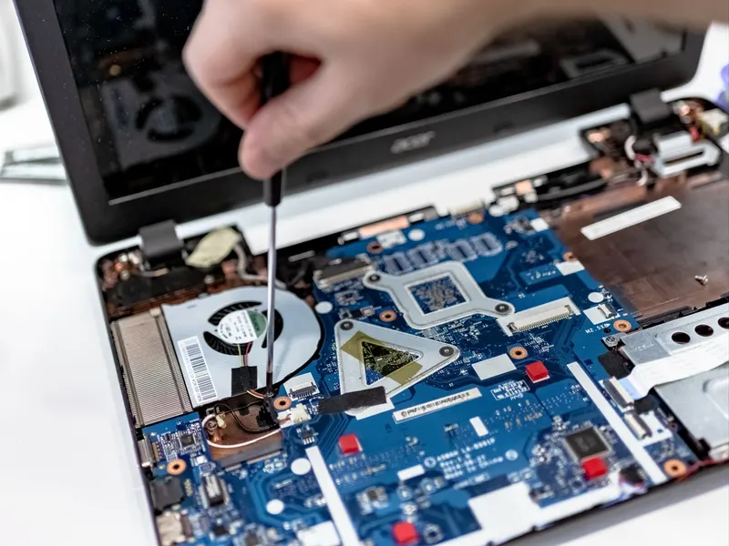
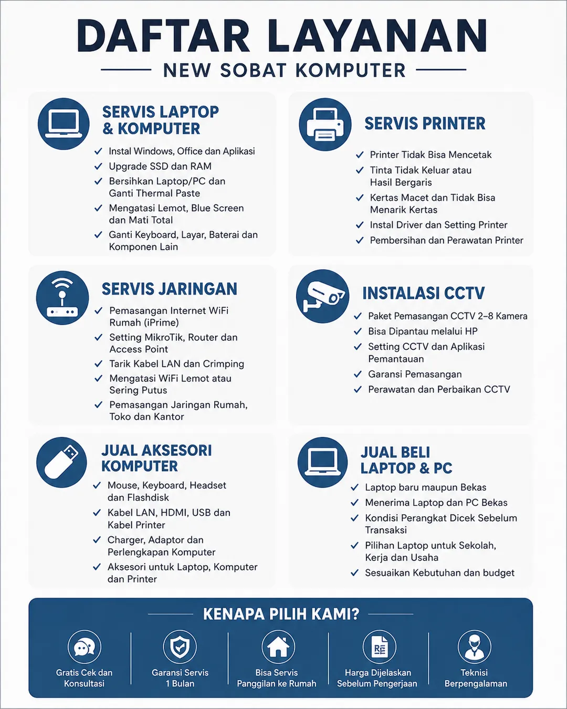
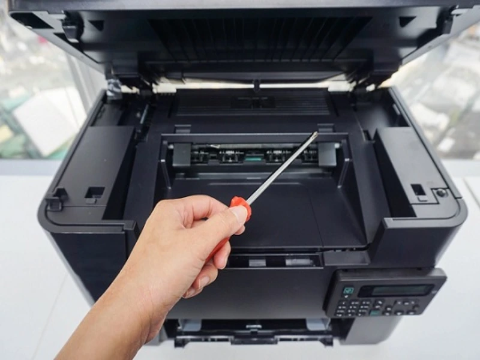
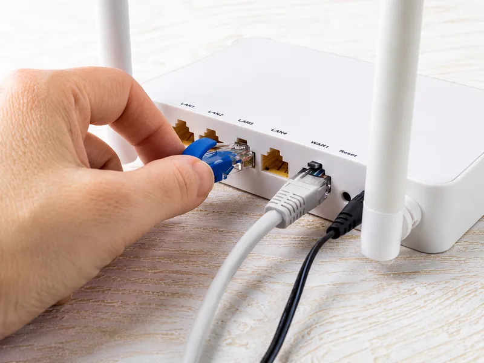

Servis Laptop & PC
Perangkat lemot, mati total, layar rusak, atau butuh tambah RAM dan SSD? Kami periksa dulu, baru dikerjakan sesuai kendalanya.
Konsultasi Laptop & PCKami cek dulu kondisi perangkat, lalu jelaskan pilihan perbaikannya sebelum mulai dikerjakan.

Ada kendala pada laptop, PC, atau printer? Kami periksa kondisi perangkat dulu, kemudian jelaskan tindakan dan perkiraan biaya sebelum mulai dikerjakan.

Perangkat lemot, mati total, layar rusak, atau butuh tambah RAM dan SSD? Kami periksa dulu, baru dikerjakan sesuai kendalanya.
Konsultasi Laptop & PC
Printer tidak mencetak, kertas macet, atau hasil cetakan bermasalah? Bawa ke toko untuk diperiksa.
Konsultasi Servis PrinterTiap tahap kami kabarkan, dari unit masuk sampai selesai.
Keluhan, kondisi, dan kelengkapan unit diperiksa saat diterima, kemudian dicatat pada nota tanda terima.
Hasil pemeriksaan dan estimasi biaya disampaikan sebelum tindakan dilakukan. Pengerjaan dilanjutkan setelah mendapat persetujuan pelanggan.
Kalau pengerjaan selesai, kami segera kabari. Kalau butuh waktu lebih lama, perkembangan servis disampaikan melalui WhatsApp.
Saat pengambilan, unit dan kelengkapannya diperiksa bersama untuk memastikan hasil pengerjaan sesuai dengan keluhan awal.
Garansi servis berlaku selama satu bulan sesuai syarat dan ketentuan yang tertulis pada nota. Simpan nota sebagai bukti servis dan syarat pengajuan garansi.
Laptop, PC, dan aksesori tersedia. Tanya stok dan kondisi unit langsung lewat WhatsApp.
Laptop dan PC dijual dengan kondisi yang dijelaskan apa adanya. Tanya stok dan detail unit melalui WhatsApp.
Lihat Produk LaptopAda mouse, keyboard, flashdisk, kabel, dan berbagai aksesori lain. Tanya ketersediaan stok melalui WhatsApp.
Lihat Aksesori KomputerKondisi fisik dan fungsi unit dijelaskan sebelum transaksi.
Kondisi fisik dan fungsi unit dijelaskan apa adanya sebelum transaksi.
Untuk klaim garansi unit, simpan nota dan pastikan segel toko tetap utuh.
Pembelian atau penjualan dicatat menggunakan nota. Simpan nota dengan baik sebagai bukti transaksi dan syarat klaim garansi.
Untuk rumah atau tempat usaha di wilayah Kejobong dan sekitarnya.
Konsultasi, survei lokasi, pemasangan, dan pengaturan CCTV untuk rumah maupun tempat usaha.
Melayani pemasangan dan penanganan jaringan untuk rumah maupun tempat usaha di wilayah Kejobong dan sekitarnya.

Tersedia untuk pemasangan baru maupun penanganan masalah jaringan di rumah atau tempat usaha.
Butuh layanan? Tanya kerusakan perangkat, stok produk, atau hal lain lewat WhatsApp.
Chat WhatsApp